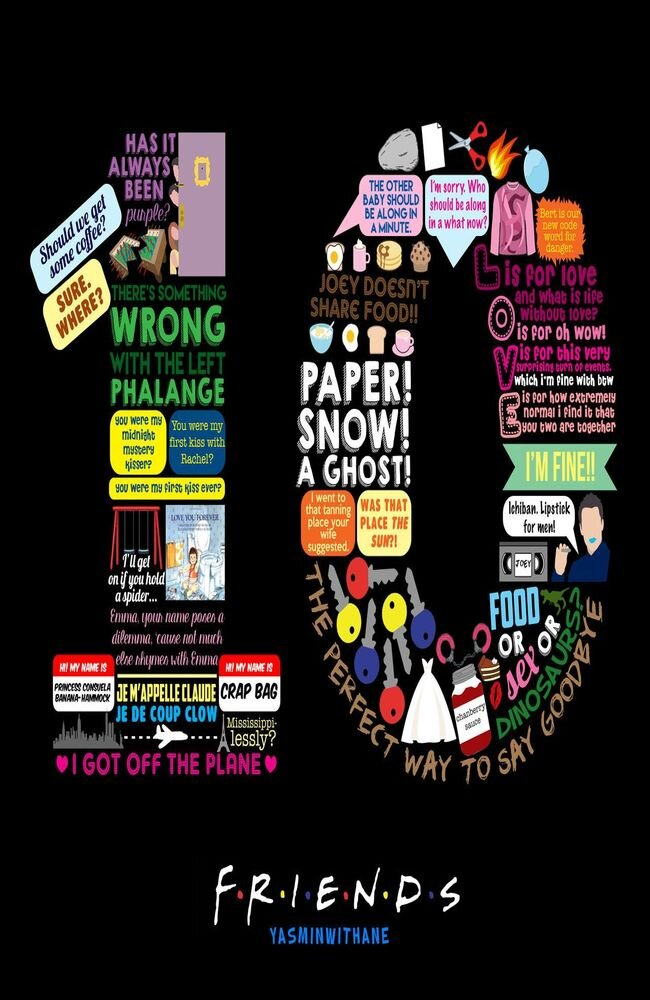

ACERVO CENTRAL
Todas as séries
Explore os seriados cadastrados, suas temporadas e episódios.
2Séries cadastradas

CONCLUÍDA★ 0.00⌕
Nenhuma série encontrada
Tente buscar por outro nome.
Explore os seriados cadastrados, suas temporadas e episódios.
Tente buscar por outro nome.